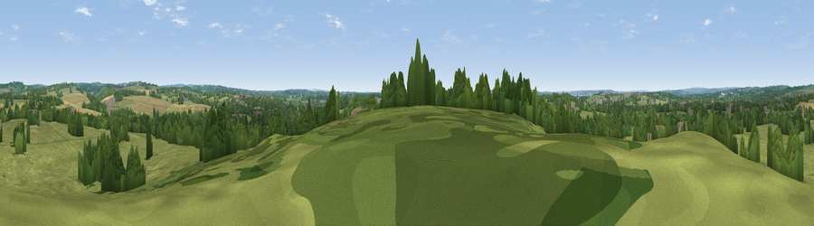

Viewpoint near Lower Upham
#35714 in England · top 56% of its area beats it · near Lower UphamWhere it is
The exact computed spot (SU 52725 18475). Click the marker for map links.
The view, rendered

A 360° render of this exact spot computed from the terrain model, tree cover and land cover — summer colours, afternoon light, calibrated against photographs of famous viewpoints. Real trees, hedges and buildings will differ in detail.
The panorama
Grey silhouette: terrain skyline in each direction (720 bearings, Earth curvature and refraction included). Dashed green: skyline with trees (+15 m) and buildings (+8 m) as obstacles. Blue strip: how far the ground is visible on each bearing.
Where the view opens
Wedge length = distance to the farthest visible ground on that bearing (vegetation-aware). Rings at 10, 25 and 50 km.
What fills the view
62% grassland · 26% woodland · 9% cropland · 3% built-up
Angular shares of the visible panorama (visual magnitude), not map area. Landscape diversity 0.43 (0–1 Shannon).
Key numbers
More beautiful places nearby
The staircase of upgrades: each row has a higher view potential than everything closer. Driving times are estimates from straight-line distance, calibrated against real road routing — check an actual route before setting out.
| Place | Direction | Drive | Score |
|---|---|---|---|
| Winters Hill | S · 1 km | ~4 min | 41.3 |
| White Hill | NNE · 3 km | ~8 min | 47.2 |
| Viewpoint near Upham | NE · 3 km | ~8 min | 47.7 |
| Stephen's Castle Down | ENE · 4 km | ~8 min | 52.0 |
| Viewpoint near Owslebury | N · 4 km | ~9 min | 52.3 |
| Viewpoint near Droxford | E · 7 km | ~14 min | 61.7 |
| Beacon Hill | ENE · 9 km | ~17 min | 71.7 |
| Viewpoint near Meonstoke | E · 11 km | ~22 min | 74.8 |
50.96329, -1.25059 · source: screening · position refined by local search. Computed location — check access rights before visiting.